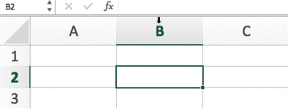

Description
ReactiveUI is a composable, cross-platform model-view-viewmodel framework for all .NET platforms that is inspired by functional reactive programming which is a paradigm that allows you to express the idea around a feature in one readable place, abstract mutable state away from your user interfaces and improve improve the testability of your application.
ReactiveUI is the father of the extremely popular ReactiveCocoa framework. Internally the team debates whether ReactiveUI is or is not a framework, as at its core the project is essentially a bunch of extension methods for the Reactive Extensions.
The team believes that code is communication between people, that also happens to run on a computer. If you optimise for humans, then over a long time your software project will end up better. Software should be understandable by other people; that is super important. We believe that only the power of the Reactive Extensions allows you to express the idea around a feature in one readable place.
There is a better way
Long ago, when computer programming first came to be, machines had to be programmed quite manually. If the technician entered the correct sequence of machine codes in the correct order, then the resulting program behavior would satisfy the business requirements. Instead of telling a computer how to do its job, which error-prone and relies too heavily on the infallibility of the programmer, why don't we just tell it what it's job is and let it figure the rest out?
Most modern programming today is basically imperative, meaning it models the traditional fetch-execute cycle of a CPU. Perform an instruction, fetch the next one. Perform that one, and so on. For decades, programmers have had to mould their brains to fit the paradigm of the CPU. It's been like this since the early 1980s. When we rely on hoping that the behavior that emerges from a program is correct, and that reliance is based on nothing more than a programmer's correctness, then we can easily find ourselves in a sticky situation. We can try and mitigate the costs of imperative programming with things like unit tests or integration tests, but why mitigate the costs when there's a better way?
Reactive programming can look scary and complex at first glance, but the best way to describe reactive programming is to think of a spreadsheet:
- Three cells, A, B, and C.
- C is defined as the sum of A and B.
- Whenever A or B changes, C reacts to update itself.
Videos
Why you should be building better mobile applications YouTube
Awaiting for Rx: A play in four acts YouTube
Function Reactive Programming: In practice YouTube
Logo & Icon
Selected Articles
-
The effort to learn Rx and ReactiveUI is worth the trouble. My claim is based on this notion that ReactiveUI shines as complexity increases, but also on my belief that most people underestimate the complexity of their app. If you disagree that most of your code is reacting to something that changed, you might be underestimating the complexity of your app.
Eric Sink, creator of SQLitePCL.raw -
It took me over 4 slow years to realize that the Reactive Extensions (RX) is a good idea. It’s never too late to start learning something new. Here’s a few reasons why I personally dived into RX. The influencers have double downed on the library, Google has moved to a RX mindset with their new Architecture Components and other languages/frameworks have implementations - Thus the knowledge is universal.
Jon Douglas, Xamarin
Team

Geoffrey Huntley Sydney, Australia |

Kent Boogaart Adelaide, Australia |

Anaïs Betts San Francisco, USA |

Olly Levett London, United Kingdom |

Giusepe Casagrande São Leopoldo, Brazil |

Brendan Forster Melbourne, Australia |

Oren Novotny New York, USA |
Contact
- Press & Business contact
- hello@reactiveui.net
- twitter.com/reactivexui
- Web
- reactiveui.net